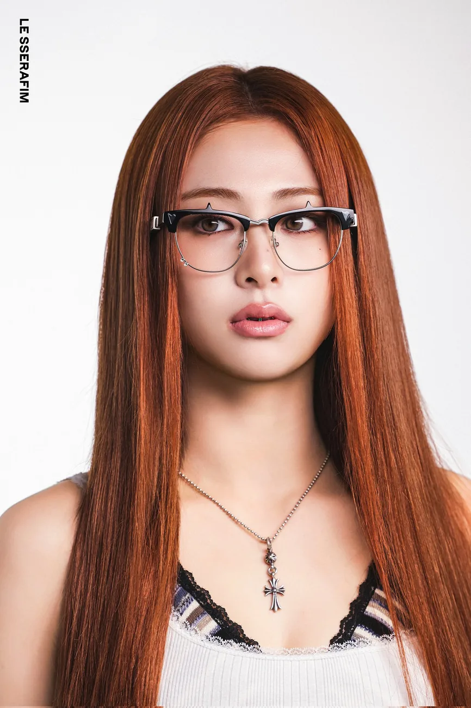
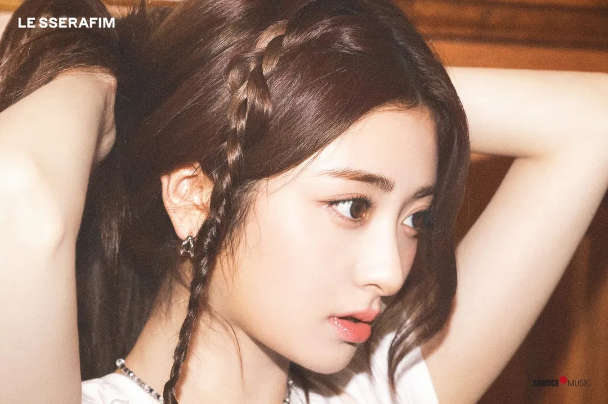
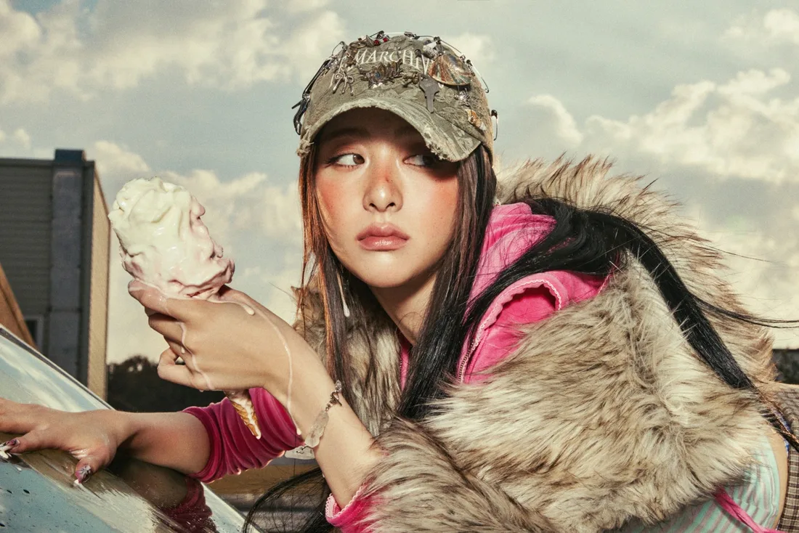
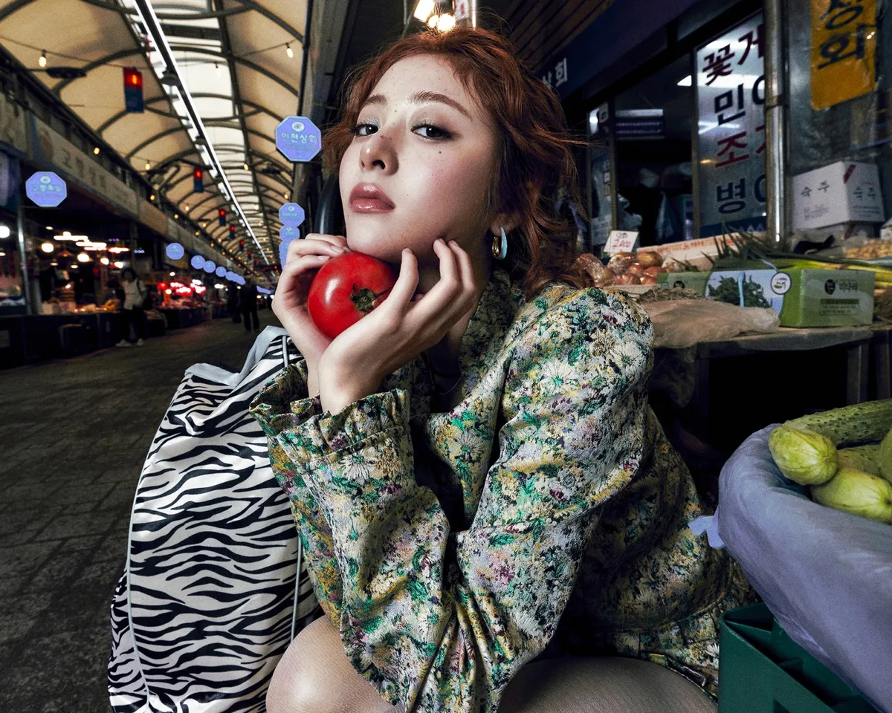

A LITTLE CHAOS. A LOT OF CHARM.COMPACT BITES01 / THE PLAYFUL ONEOPEN ↗
YUNJIN.EXE / 01 OF 05

A LITTLE CHAOS. A LOT OF CHARM. COOL LIGHT. MAIN CHARACTER ENERGY.
COOL LIGHT. MAIN CHARACTER ENERGY.
SOME MOMENTS DESERVE TO STAY.
FOR THE WILD AT HEART.
A LITTLE WEIRD IS A BEAUTIFUL THING.